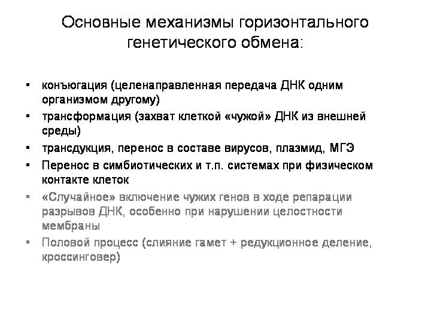

http://macroevolution.narod.ru/lgt2008/lgt2008.htm
А. В. Марков
Горизонтальный перенос генов и эволюция
Доклад в Институте Общей Генетики, 13 ноября 2008 г.

4 или 5 лет назад на этом семинаре Сергей Васильевич Шестаков делал доклад на эту же тему. Поэтому я свою задачу вижу прежде всего в том, чтобы рассказать о новых открытиях в данной области, сделанных в последние годы. Но вначале я вкратце напомню, о чем рассказывал Сергей Васильевич.
Вот основные тезисы его доклада.
1) Прочтение геномов прокариот и эукариот показало, что традиционные представления о филогении, базирующиеся на идее дивергенции, недостаточны для понимания генеалогии видов. Ветвление таких деревьев по схеме бифуркации отражает только принцип вертикальной эволюции.
2) Данные геномики позволяют утверждать, что в ходе эволюции происходили генные переносы как внутри царств, так и между ними. Предполагается, что на самых ранних этапах эволюции существовало некое общее генное "коммунальное хозяйство". Картина эволюционных связей в мире предковых прокариот представляла собой не столько дерево, сколько своего рода мицелий с переплетенной сетью горизонтальных переносов в самых разнообразных и неожиданных направлениях. По мере усложнения организмов и развития механизмов полового размножения и репродуктивной изоляции горизонтальный перенос становился более редким явлением.
3) Горизонтальный перенос генов можно выявить по ряду показателей. Во-первых, по нуклеотидному составу ДНК. Отличие в нуклеотидном составе отдельного сегмента от остальной части генома является указанием на присутствие "чужих" генов. Во-вторых, по частоте встречаемости в гене определенных кодонов. Третий важный критерий - существенное отличие в положении анализируемого гена на филогенетическом дереве от большинства других генов. О "чужеродном" происхождении гена может говорить высокая степень его сходства с гомологичным геном из отдаленного таксона при отсутствии подобного гена у близких "родственников".

Сергей Васильевич также показывал вот эту таблицу из обзора 2001 года, которая дает представление о масштабах горизонтального переноса у прокариот. Примерно от 4 до 15 процентов генов были получены разными видами микробов путем горизонтального переноса. Речь здесь идет прежде всего о недавних событиях, потому что древние акты горизонтального переноса выявить сложнее. По последним данным число перенесенных генов может быть больше. Например, в этой таблице написано, что у E.coli 381 перенесенный ген, или 9,6%. А по более новым данным у нее 755 перенесенных генов, то есть 18%, вдвое больше. Эти 755 генов были приобретены в течение последних 200 млн лет. Примерно по 4 гена за миллион лет.
Общие закономерности горизонтального переноса у прокариот, которые отметил в своем докладе Сергей Васильевич:
-
Доля латерально полученных генов варьирует у разных видов и может достигать 10-15%. По последним данным, может быть и больше.
-
Наибольшее количество переносов характерно для свободноживущих бактерий с широкими экологическими ареалами.
-
Наименьшее число переносов обнаружено у патогенных бактерий, живущих в узких эконишах.
-
Переносы специфичны, поскольку приобретенный ген обнаруживается, как правило, только в клетках определенного вида (но это опять-таки справедливо для недавних переносов, а древние переносы, естественно, могут наследоваться в ходе дивергенции группы и со временем стать общим достоянием большого таксона).
-
Реже всего в горизонтальные переносы вовлечены гены информационных систем (транскрипции, трансляции, репликации), составляющие базовый геном. Продукты этих генов входят в сложные белковые комплексы, где "чужие" белки не встраиваются или не функционируют.
-
Чаще всего в горизонтальном переносе участвуют гены, связанные с метаболизмом, транспортными путями и передачей сигналов.
-
В составе приобретенных сегментов ДНК часто обнаруживаются профаги, плазмиды, гены белков, участвующих в процессах рекомбинации.

4) Горизонтальная передача генов реализуется через различные каналы генетической коммуникации - процессы коньюгации, трансдукции, трансформации, процессы переноса генов в составе векторов - плазмид, вирусов, мобильных элементов. Активный перенос генов может происходить в симбиотических и паразитарныхсистемах, где есть физический контакт клеток. К этому перечню я серым цветом добавил еще два пункта:
-
«Случайное» включение чужих генов в ходе репарации разрывов ДНК, – этот механизм, по-видимому, важен для некоторых многоклеточных эукариот, о чем я расскажу чуть позже.
-
Второй пункт – это половой процесс, который мы обычно не рассматриваем как вариант горизонтального генетического обмена, хотя суть явления в принципе та же самая: это объеднинение в одном геноме генов разных организмов. В обоих случаях речь идет, если можно так выразиться, о межорганизменной генетической рекомбинации. Представляется, что появление полового процесса было закономерным результатом эволюции механизмов межорганизменной рекомбинации. Половой процесс отличается от более примитивных механизмов двумя основными чертами: 1) большей избирательностью (то есть смешение генов происходит в основном между близкородственными организмами). Однако и у прокариот, конечно, есть такая избирательность: близкородственные микробы обмениваются генами намного чаще, чем филогенетически удаленные. У эукариот избирательность стала настолько строгой, что это привело к появлению относительно замкнутых, то есть эндогамных группировок, которые мы называем биологическими видами. У прокариот таких строго эндогамных группировок нет. Поэтому Линн Маргулис, например, предлагает считать всех прокариот одним биологическим видом. 2) Второе отличие – при половом процессе объединяются и рекомбинируют не фрамгенты геномов, а целые геномы. Эти отличия, конечно, очень важные, но в определенном смысле они не столько качественные, сколько количественные.

5) Сергей Васильевич в своем докладе отметил, что современная генная инженерия, по сути дела, базируется на принципах горизонтального переноса генов, хотя еще недавно не было четкого понимания того, что такого рода генная инженерия широко распространена в природе. Действительно, например, бактерии, способные к конъюгации, являются самыми настоящими природными генными инженерами. Причем они могут вводить свою ДНК не только в клетки других прокариот, но и в эукариотические клетки, как показывает пример агробактерии. Агробактерия вводит часть своей ДНК в растительную клетку, что приводит к развитию опухоли, в которой бактерия чувствует себя комфортно. Характерно, что агробактерия, как и другие родственные ей микробы – паразитические альфапротеобактерии – использует для введения своей ДНК или белков в клетки эукариот модифицированный аппарат конъюгации. Конъюгацию называют аналогом полового процесса у прокариот. И получается, что агробактерия совершает с растительными клетками нечто похожее на половой процесс.
Агробактерия сейчас широко используется для создания трансгенных растений. Так что это не человеческое изобретение, мы научились этому у природы и пользуемся природными технологиями.
На этом я заканчиваю краткий и, может быть, чуть-чуть вольный пересказ того, о чем говорил Сергей Васильевич и перехожу к основной части своего сообщения. Это будет обзор новых фактов и результатов, полученных в этой области за последние 3-4 года.
Надо сказать, что новых фактов очень много, и выбрать из них самые важные, или тем более провести глубокую систематизацию этих данных довольно трудно, а может быть пока и преждевременно.
Начнем с прокариот.
ПРОКАРИОТЫ
История первая: пересадка генома

Сотрудники институт Крейга Вентера экспериментально показали, что у прокариот в принципе возможен обмен целыми геномами, что может приводить к превращению одного вида бактерий в другой.
Этот институт работает над созданием искусственных микробов. Например, планируется создание микробов, которые будут производить дешевое топливо. Работы ведутся в с бактериями рода Mycoplasma. Одна из важных задач проекта – это научиться вставлять целый геном в живую бактерию, полностью заменив при этом ее собственный геном.
До сих пор это не удавалось сделать. Но вот в июне 2007 г Крейг Вентер и его коллеги сообщили о первой успешной пересадке целого генома от одного вида бактерий другому. Сделано было следующее. Выделили геном из бактерии Mycoplasma mycoides, которая вызывает пневмонию у коров. Геном был очищен от всех примесей и добавлен в культуру бактерий Mycoplasma capricolum, возбудителей козьего полиартрита. В донорский геном были предварительно внесены в качестве меток гены устойчивости к антибиотикам. Эти два вида микоплазм довольно близкие, разошлись они несколько десятков миллионов лет назад, может быть, тогда же, когда разошлись их хозяева – коровы и козы. На слайде красным кружком показано положение этих видов на эволюционном древе класса Mollicutes.
Вскоре среди клеток Mycoplasma capricolum появились бактерии с признаками Mycoplasma mycoides. Обработав культуру бактерий антибиотиком, уничтожили тех микробов, которые не вобрали в себя чужую ДНК. Уцелевшие бактерии оказались по всем признакам представителями вида M. mycoides. Один вид бактерий превратился в другой.
По-видимому, бактерии «проглатывали» чужую молекулу ДНК, и сначала в них содержались оба генома вместе. Когда такая клетка делилась, одна из дочерних клеток получала геном одного вида, другая – другого.
Этот эксперимент показал, что в мире прокариот в принципе возможны и такие полногеномные акты горизонтального переноса. То есть при трансформации у прокариот в принципе нет жестких ограничений на размер фрагментов ДНК, получаемых из внешней среды. Могут передаваться не только маленькие фрагменты, но и большие, и даже целые геномы.
История вторая: отважный странник
Следующая история – это просто интересная илюстрация того, для чего может быть нужен горизонтальный перенос, к каким эволюционым и экологическим последствиям он может приводить у прокариот. Два года назад в Южной Африке в одном из золотых приисков на глубине 3 км под землей был найден водоносный слой с очень древней водой, а в этой воде уже в нынешнем году обнаружили уникальное микробное сообщество. Уникальность его состоит в том, что все население этой подземной экосистемы представлено одним-единственным видом бактерий.
Бактерия получила название Desulforudis audaxviator. Авторы поясняют смысл видового названия. «Audax viator» — слова из таинственной латинской фразы, указавшей герою повести Жюля Верна путь к центру Земли. В переводе они означают «отважный странник». Предполагается, что микроб совершил свое отважное путешествие в недра Земли и приспособился к жизни в полном одиночестве около 20 млн лет назад.
«Отважный странник» не просто самостоятельно обеспечивает себя всем необходимым. Он вообще не нуждается ни в каких других живых существах, ни в каких химических соединениях, производимых другими организмами, ни в солнечном свете, ни в кислороде. Это полная и абсолютная независимость и самодостаточность. Такой микроб вполне мог бы жить в недрах других планет, конечно, если там есть вода.

Здесь показана реконструкция этой удивительной подземной экосистемы с одним-единственным живым обитателем. Видно, что важную роль в функционировании экосистемы играет радиоактивный распад урана.
Геном этого микроба был прочтен, и выянилось, что это сульфатредуцирующая бактерия, родственная известным ранее сульфатредукторам (Desulfotomaculum). Поскольку микроб в одиночку выполняет все функции, которые должны выполнять живые существа в экосистеме, его геном содержит полный набор средств жизнеобеспечения в экстремальных условиях, включая механизмы для получения энергии, фиксации азота и углерода и синтеза всех необходимых веществ. Но вот что интересно: очень большое число генов, необходимых для выживания в экстремальных условиях, оказались приобретенными путем горизонтального переноса от архей, которые, как известно, являются лучшими экспертами по выживанию в экстремальных условиях. В частности, «отважный странник» заимствовал у архей многие гены, необходимые для сульфатредукции, для фиксации молекулярного азота, для осуществления разных других биохимический функций при высоких температурах (а температура воды там выше 60 градусов). То есть, по-видимому, этому микробу не удалось бы стать таким независимым и самодостаточным, если бы он предварительно не пообщался очень тесно с другими микробами и не позаимствовал у них полезные гены. Путь к независимости через кооперацию.
Этот пример показывает, зачем бывает нужен горизонтальный перенос и к каким эволюционным изменениям он может приводить.
История третья: гены протеородопсинов – общественное достояние
Приведу еще один пример такого рода. У некоторых морских планктонных бактерий были известны белки – протеородопсины, позволяющие частично утилизировать энергию солнечного света. Это гораздо более простая система, чем настоящий фотосинтез, хотя и менее эффективная. Но для ее работы достаточно всего одного или двух генов, поэтому эта система легко может передаваться путем горизонтального переноса. Оказалось, что так оно и происходит. Протеородопсины обнаружены не только у разных групп бактерий в фотической зоне океана, но и у многих архей, тоже живущих в фотической зоне. Причем эти гены у бактерий и архей очень похожи друг на друга, поэтому ясно, что они передаются от одного вида другому. Получается, что эти гены являются неким общим достоянием, коллективной собственностью сообщества прокариот, живущих в фотической зоне океана. Интересно, что родственные виды бактерий и архей, живущие на большей глубине, куда свет не проникает, не имеют генов протеродопсинов.
Это было два новых примера, иллюстрирующих эволюционное и экологическое значение горизонтального переноса у прокариот.
А каков в целом масштаб явления?
История четвертая: не менее 80% генов в каждом прокариотическом геноме участвовали в процессе горизонтального обмена на том или ином этапе эволюции.
Очень интересная статья об этом вышла в июле нынешнего года. К 180 прокариотическим геномам были применены новые методы анализа, разработанные для изучения сетевых структур. Примененная методика позволила выявить не только недавние события горизонтального переноса, то есть связи между концевыми ветвями эволюционного древа, но и древние события, которые связывают между собой все узлы эволюционного древа прокариот.
И вот что получилось. На этом слайде показано базовое филогенетическое древо, основанное на генах рРНК.

А вот то же древо с нанесенными «связями», отражающими перенос 20 или более генов. Всего выявлено 823 случая, когда из одной точки эволюционного древа прокариот в другую точку было горизонтально перенесено 20 или более генов.
То же древо, показаны случаи переноса 5 или более генов (3764 случая):

То же древо, показаны случаи переноса 1 или более генов (15127 случаев):
Вот цифры. В первой колоке – процент генов, приобретенных путем горизонтального переноса в среднем на геном, если учитывать только те гены, которые были приобретены недавно, то есть после последней дивергенции. Мы видим, что цифры примерно такие же или немного больше, чем в той таблице, которую показывал С.В.Шестаков. У некоторых групп – намного больше – например, у дельтапротеобактерий до 34%. Но еще интереснее вторая колонка цифр. Она показывает процент генов, попавших в данный геном путем горизонтального переноса за всю историю данной эволюционной линии. И здесь мы уже видим цифры, доходящие до 98%.

Не удивительно, что авторы делают вывод о том, что представление эволюции прокариот в виде ветвящегося древа уже нельзя считать адекватным. На самом деле это не дерево, а сеть. Горизонтальный перенос происходит не очень часто, поэтому мы и видим сравнительно небольшой процент недавно приобретенных генов. Однако с течением эволюционного времени кумулятивный, суммарный эффект горизонтального переноса накапливается как снежный ком. На этом слайде показана трехмерная реконструкция эволюции прокариот с учетом горизонтального переноса.

Вот такие поистине глобальные масштабы имеет горизонтальный перенос в мире прокариот.
Ну а что же с эукариотами?
ОДНОКЛЕТОЧНЫЕ ЭУКАРИОТЫ
Я не буду подробно останавливаться на таких хорошо известных вещах, как то, что эукариотический ядерный геном является химерным с самого начала. Мы видим в нем смесь генов архейного и бактериального происхождения, которые объединились на ранних этапах становления эукариотической клетки. Хорошо известно, что большинство генов предков митохондрий – альфапротеобактерий и предков пластид – цианобактерий – переместились в ядерный геном в ходе процесса симбиогенеза.
Эти события, конечно, тоже, следует классифицировать как акты горизонтального переноса. И в результате мы имеем эукариотический ядерный геном, имеющий изначально смешанное происхождение.
Но мы будем говорить о тех событиях, котрые происходили уже после становления эукариотической клетки. У эукариот, в отличие от прокариот, нет механизма конъюгации, который позволяет передавать свои гены неродственным организмам, вроде бы нет и прямых аналогов трансформации. Однако эукариоты, особенно одноклеточные, могут тем не менее заимствовать гены у бактерий. И чем больше прочтенных эукариотических геномов, тем яснее это становится.
История пятая: диатомеи – рекордсмены по заимствованию бактериальных генов среди эукариот
Рекордсменом на сегодняшний день является одноклеточная диатомовая водоросль Phaeodactylum, геном которой был прочтен месяц назад. В геномах диатомей обнаружено много генов, которые были заимствованы у различных прокариот: цианобактерий, протеобактерий, архей и других. В геноме Phaeodactylum обнаружено 587 таких заимствованных генов, что составляет 5,6% от общего числа генов в геноме. Более половины из этих генов (56%) есть также и у центрической диатомеи Thalassiosira. Эти гены, очевидно, были заимствованы диатомеями у прокариот довольно давно — еще до расхождения эволюционных линий центрических и пеннатных диатомей. А диатомеи появились 180 млн лет назад, в юрском периоде – это довольно молодая группа. Остальные 44% прокариотических генов Phaeodactylum, то есть 258 генов, были заимствованы предками Phaeodactylum уже после разделения линий центрических и пеннатных диатомей, то есть в течение последних 90 млн лет. Отсюда можно подсчитать среднюю скорость заимствования: примерно по три гена за миллион лет. Если помните, у кишечной палочки эта скорость примерно такая же.

Какую пользу получают диатомеи от бактериальных генов? Во-первых, это расширяет их биохимические возможности. В частности, бактериальные гены участвуют в построении ажурных кремневых раковинок — главной «визитной карточки» диатомей, которая во многом обеспечила их эволюционный успех. Диатомеи позаимствовали у бактерий также многие гены рецепторных и сигнальных белков, при помощи которых бактерии, а теперь и диатомеи, воспринимают сигналы из окружающей среды и реагируют на них. Среди заимствованных у бактерий рецепторов есть даже несколько светочувствительных белков, благодаря которым диатомеи могут реагировать на изменения освещенности.
Вполне возможно, что активный обмен генами между диатомеями и бактериями был одной из главных причин быстрой эволюции диатомей и их эволюционного успеха.
Следует упомянуть еще один важный момент, связанный с геномами диатомей. Диатомеи вместе с бурыми и золотистыми водорослями входят в состав группы Heteroconta. Считается, что гетероконты появились около 1 млрд лет назад в результате симбиоза гетеротрофной эукариотической клетки с одноклеточной красной водорослью. У красных водорослей, как и у зеленых растений, хлоропласты являются первичными, то есть происходят напрямую от симбиотических цианобактерий. Предки гетероконт проглотили одноклеточную красную водоросль и превратили ее в фотосинтезирующего симбионта. Впоследствии от клетки красной водоросли почти ничего не осталось, кроме внешней оболочки и хлоропласта. Поэтому хлоропласты гетероконт являются «вторичными», и они окружены не двумя, а четырьмя мембранами. Чтобы проверить эту теорию, был предпринят поиск в геномах диатомей генов, похожих на гены красных водорослей. Поиск увенчался успехом: выявили более 170 генов, унаследованных предками диатомей от красных водорослей. Таким образом, массовый горизонтальный перенос генов, связанный с симбиогенезом, происходил и после того, как сформировалась эукариотическая клетка.
Случаи горизонтального переноса генов от одних одноклеточных эукариот к другим, не связанные с симбиогенезом, встречаются реже. Однако и такие случаи тоже начинают обнаруживаться. Только что, в ноябрьском номере Journal of Evolutionary Biology появилось сообщение о том, что в геноме хоанофлагеллят обнаружено 4 гена, заимствованных у водорослей. Эти гены связаны с реакцией на стресс. Возможно, они помогли предкам хоанофлагеллят приспособиться к пресной воде или сидячему/колониальному образу жизни.
Другой пример: есть данные (Lucia Peixoto and David S. Roos, Department of Biology and Penn Genomics Institute, University of Pennsylvania, Philadelphia, PA, USA http://www.iscbsc.org/scs3/abstracts/pdf/luciap_20070510084733.pdf), что в эволюции эукариот из группы Apicomplexa, куда относятся токсоплазма и малярийный плазмодий, было не менее 228 случаев горизонтального переноса, в том числе 91 ген был заимствован у растений в результате опять-таки эндосимбиоза, 14 генов было взято у бактерий и 95 – у животных.
В целом новые данные говорят о том, что горизонтальный генетический обмен играет в эволюции одноклеточных эукариот более важную роль, чем считалось до сих пор.
Но вот когда мы переходим от одноклеточных эукариот к многоклеточным, то факты горизонтального переноса сразу становятся гораздо более редкими. И все-таки такие факты есть, и, что самое главное, их количество быстро растет.
РАСТЕНИЯ
История шестая: паразитическое растение заимствовало гены у своих хозяев

Раффлезия — паразитическое растение с самыми крупными в мире цветами, но полностью лишенное листьев, стебля и корней. Раффлезия паразитирует на лианах рода Tetrastigma. Она образует в тканях хозяина тяжи, напоминающие грибной мицелий, и все, что осталось у нее от цветкого растения – это цветок. Систематическое положение раффлезии по морфологическим признакам не определялось, и только в 2007 году по молекулярным данным установили, что она относится к семейству молочайных. По всем генам она группируется с молочайными, однако по одному из митохондриальных генов (nad1B-C) раффлезия оказывается ближайшим родственником своего хозяина – лианы Tetrastigma. Очевидно, часть митохондриального генома была заимствована раффлезией у хозяина.
К 2008 году было описано 40 случаев горизонтального переноса митохондриальных генов от одного растения к другому. Почему-то именно растительные митохондрии активно участвуют в горизонтальном переносе. Часто в обмене участвуют паразитические или эпифитные растения, то есть нужен тесный физический контакт.
Рекордсменом является очень примитивное цветковое растение Amborella, которая растет в Новой Каледонии. Она заимствовала у других растений целых 24 митохондриальных гена.
Но описаны и случаи обмена ядерными генами. Например, недавно была обнаружена горизонтальная передача транспозона между двумя видами злаков (рис и просо).
ЖИВОТНЫЕ
История седьмая: животные обмениваются генами с паразитическими бактериями
В 2007 году было показано, что гены и даже целые геномы паразитических бактерий иногда могут вставляться в хромосомы животных-хозяев.
Вольбахия — паразитическая бактерия, живущая в клетках многих беспозвоночных. Вольбахию называют микробом-манипулятором, потому что она научилась при помощи регуляторных белков управлять размножением и развитием своим хозяев. Например, она умеет превращать самцов в самок, избирательно убивать зародышей мужского пола, повышать плодовитость зараженных самок и так далее. Вольбахия паразитирует в клетках беспозвоночных уже 100 миллионов лет, и ее предки тоже были внутриклеточными паразитами. При таком долгом и тесном сожительстве было бы даже странно, если бы фрагменты генома вольбахии не попадали бы хотя бы иногда в хозяйский геном. Но до сих пор доказать это не удавалось, и удалось только в прошлом году.

В геномах 4 видов насекомых и 4 видов круглых червей-филярий обнаружены фрагменты генома вольбахии, причем в одном случае - у Drosophila ananassae – геном бактерии оказался вставлен в геном хозяина целиком. Получается, что в ядрах клеток этих мух содержится генетическая информация сразу о двух разных организмах!
Многие гены, заимствованные мухой у бактерии, работают, или по крайней мере транскрибируются. Это значит, что инкорпорация бактериальной ДНК может быть одним из способов приобретения новых генов в эволюции животных.
Теоретически вольбахия может служить вектором, обеспечивающим передачу генов от одних животных к другим. Ведь в геноме самой вольбахии есть гены, предположительно заимствованные у эукариотических хозяев.
История восьмая: молекулярное одомашнивание
Хотя случаи горизонтального обмена между животными и другими клеточными организмами довольно редки, важнейшую роль в эволюции животных играют гены, которые животные заимствуют у вирусов, транспозонов и ретротранспозонов. Я считаю, что эти случаи тоже можно рассматривать как примеры горизонтального переноса, потому что животные при этом тоже получают новые гены «со стороны», то есть не вертикально – по наследству от родителей – а извне, горизонтально, от соврешенно других филогенетических линий, независимо от того, считаем мы вирусов живыми существами или нет. В любом случае вирусы – это не животные, и не родители нам, то есть мы получаем от них гены горизонтальным путем.
Фрагменты ДНК вирусов и транспозонов часто «приручаются» высшими организмами и начинают выполнять полезные функции в геноме. Явление это настолько широко распространено, что для него даже предложен специальный термин – молекулярное одомашнивание.
Вот несколько примеров важных эволюционных событий, связанных с молекулярным одомашниванием:
1) Ферменты теломеразы, служащие для восстановления концевых участков хромосом, возможно, ведут свое происхождение от обратных транскриптаз, кодируемых ретровирусами и ретротранспозонами.
2) Белки RAG, играющие ключевую роль в системе адаптивного иммунитета, по-видимому, происходят от прирученных транспозаз – ферментов, кодируемых транспозонами.
3) Ген Peg10, необходимый для развития плаценты был позаимствован древними млекопитающими у ретротранспозона.
В 2007 году был прочтен геном короткохвостого опоссума. Его сравнение с геномами плацентарных (человека, мыши, крысы и собаки) показало, что ключевую роль в эволюции млекопитающих играли не изменения белок-кодирующих генов, а появление новых некодирующих регуляторных последовательностей. Этот вывод был сделан на основе анализа консервативных некодирующих элементов. При этом оказалось, что не менее 16% новых консервативных некодирующих элементов, которые появились у плацентарных, сформировались из фрагментов мобильных генетических элементов. Тем самым впервые удалось показать, что возникновение эволюционных новшеств на основе мобильных элементов — не исключение, а правило.

Фактически идет постоянный процесс превращения так называемой «мусорной» или «эгоистической» ДНК» в полезные элементы генома.
Транспозоны и ретротранспозоны это, конечно, не вирусы, но многие из них могут вести свой род от вирусов, а некоторые иногда могут вторично приобретать инфекционность. Во всяком случае, мобильные элементы обладают повышенной способностью к горизонтальной передаче по сравнению с другими частями генома многоклеточных. Я уже говорил о том, что у растений есть случаи горизонтальной передачи транспозонов от одного вида растений к другому. Это может вести к важным эволюционным последствиям, потому что у растений транспозоны тоже подвергаются молекулярному одомашниванию.

В 2007 году был описан первый случай превращения прирученных генов мобильных элементов в самые настоящие транскрипционные факторы. Оказалось, что у арабидопсиса два транскрипционных фактора, от которых зависит реакция растения на освещенность, происходят от прирученных транспозаз – то есть белков, которые изначально входили в состав транспозонов и отвечали за их перемещения.
В эволюции приматов тоже имело место приобретение полезных генов «со стороны», а именно от ретровирусов. Например, в октябре этого года была расшифрована эволюционная история двух таких генов (ENVV1 и ENVV2). Эти гены у обезьян и человека работают в плаценте. По своему происхождению они являются генами белков оболочки ретровируса.
Исходный ретровирус встроился в геном наших предков и стал эндогенным ретровирусом (ЭРВ) после того, как разделились линии обезьян и лемуров, но до того, как разошлись обезьяны Старого и Нового света, то есть от 43 до 77 млн лет назад. Этот ЭРВ вскоре подвергся двум последовательным дупликациям, и в результате получилось три одинаковых ЭРВ, расположенных по соседству на одной хромосоме. Все участки этих ЭРВ, кроме генов белков оболочки, стали постепенно дегенерировать. Ген ENVV2 приобрел в результате мутаций какое-то полезное для хозяина свойство и стал сохраняться отбором. Другие два гена, по-видимому, тоже приобрели полезные функции, но они оказались не столь незаменимыми, как ENVV2. Поэтому в некоторых эволюционных линиях обезьян эти гены были утрачены или выведены мутациями из строя. В частности, общий предок человека и шимпанзе потерял ген ENVV3.
Я уже говорил, что эти вирусные гены у человека и обезьян работают в плаценте. Какую функцию они там выполняют? Возможных функций три:
-
управление слиянием клеток в ходе формирования наружного слоя плаценты — синцитиотрофобласта;
-
защита эмбриона от иммунной системы матери (у обоих белков есть участок, обладающий иммуносупрессивным действием — это вполне понятно, если вспомнить, что изначально они входили в состав вирусной оболочки);
-
защита эмбриона от «диких» ретровирусов. У ENVV1 и ENVV2 сохранились участки, связывающиеся с теми поверхностными белками клетки, к которым прикрепляются ретровирусы, чтобы проникнуть в клетку. Если к такому поверхностному белку уже прикрепился белок ENVV1 или ENVV2, дикий ретровирус не может использовать его для проникновения в клетку.
Таким образом, целых три полезных применения нашли себе вирусные гены в плаценте обезьян.
Эти данные показывают, что те генетические модификации, которым нас подвергают ретровирусы, в долгосрочной перспективе могут оказаться полезными.
История девятая. Горизонтальный обмен генами заменяет коловраткам половое размножение
Напоследок я расскажу о самом потрясающем, на мой взгляд, открытии, которое было сделано в этом году, и которое показало, что некоторые животные все-таки могут в массовом порядке заимствовать гены не у вирусов, а у клеточных организмов: у бактерий, грибов и растений. Эти животные – бделлоидные коловратки, группа во многом уникальная. Главная их особенность – это полный отказ от полового размножения. Я уже говорил о возможных параллелях между горизонтальным генетическим обменом и половым размножением, и о том, что, на мой взгляд, половое размножение в определенном смысле заменило эукариотам горизонтальный генетический обмен. И вот на примере бделлоидных коловраток мы видим подверждение этой идеи.
Животные вообще довольно легко утрачивают половое размножение и переходят к партеногенезу. Такое не раз происходило в разных эволюционных линиях. Однако виды животных, отказавшиеся от полового размножения, имеют тенденцию очень быстро вымирать. Они не успевают дивергировать и дать начало, допустим, целому бесполому семейству или отряду.
Бделлоидные коловратки представляют собой удивительное исключение. Это целый класс животных (включающий около 400 видов), которые размножаются только бесполым путем (партеногенетически). Никто никогда не видел самцов бделлоидных коловраток. По-видимому, полового размножения не было уже у общего предка бделлоидных коловраток, который жил много десятков миллионов лет назад.
Бделлоидные коловратки — главный камень преткновения для всех теоретиков, пытающихся объяснить биологический смысл полового размножения. Какое ни придумай объяснение, сразу же возникает «проклятый» вопрос: если половое размножение такое полезное, как же бделлоидные коловратки без него обходятся? И если бделлоидные коловратки научились без него обходиться, почему другие животные не пошли по тому же пути? Ведь половое размножение — весьма «дорогое удовольствие» с точки зрения естественного отбора. При бесполом размножении вы передаете каждому потомку все свои гены, а при половом — только половину. За половое размножение приходится платить двукратным снижением эффективности передачи генов потомству. Джон Мэйнард Смит назвал этот парадокс «двойной ценой пола». Другие авторы отмечали, что любое теоретическое построение, указывающее на преимущества полового размножения, обязательно должно как-то объяснять парадокс бделлоидных коловраток.
И вот, похоже, удалось нащупать решение этой давней загадки. В концевых участках хромосом бделлоидной коловратки Adineta vaga было обнаружено множество генов, не встречающихся ни у каких других животных. Некоторые из этих генов явно имеют бактериальное происхождение. Другие происходят от грибов, третьи — от растений. Полные геномы бделлоидных коловраток пока не прочтены. Удалось проанализировать лишь около 1% генома коловратки (примерно 1 млн пар нуклеотидов). Были выявлены десятки генов, заимствованных коловратками у представителей других царств.

Я хочу подчеркнуть, что примененные методы не позволяли выявить гены, заимствованные у других животных или, тем более, у других бделлоидных коловраток. Выявлялись только гены, заимствованные не у животных.
Как известно, животные стараются оберегать свои половые клетки от чужого генетического материала, в том числе вирусного. У бделлоидных коловраток эти барьеры, по-видимому, ослаблены. Это может быть связано с необычным образом жизни этих животных. Они живут в мелких лужах и отлично переносят высыхание. Потом их, как пыль, может перенести ветром в другую лужу. Однако при высыхании мембраны клеток могут повреждаться, что облегчает проникновение чужой ДНК. При высыхании также образуются разрывы в хромосомах, которые клеткам приходится зашивать, репарировать, когда коловратка снова размокнет. В ходе репарации разорванных хромосом имеется вероятность случайного включения в хромосому чужеродного фрагмента.
Любопытно, что некоторые заимствованные бактериальные гены у коловраток сохранили структуру, характерную для прокариотических генов (в них нет интронов), а другие уже успели обзавестись интронами, характерными для эукариот. По крайней мере некоторые из заимствованных генов реально работают в клетках коловраток и кодируют функциональные белки.
Пока еще не было попыток выяснить, обмениваются ли бделлоидные коловратки генами между собой. Это технически более трудная задача, чем выявление генетического обмена с бактериями и грибами. Однако вряд ли коловратки, охотно заимствующие гены у микробов и растений, имеют при этом какую-то особую систему защиты от заимствования генов у родственников. Если же они хотя бы иногда меняются генами друг с другом, то получается, что они на самом деле не отказались от идеи межорганизменной генетической рекомбинации, то есть перемешивания генов разных родителей в геноме потомства. Они просто вернулись от продвинутого варианта такой рекомбинации (полового процесса) к более примитивному варианту — горизонтальному обмену, который был характерен для их далеких одноклеточных предков.
* * *
В заключение хотелось бы подчеркнуть следующее. Очень может быть, что в эволюции многоклеточных горизонтальный перенос играет более заметную роль, чем это известно на сегодняшний день. Этот вопрос обязательно будет проясняться по мере прочтения новых геномов. Новые случаи горизонтального переноса у многоклеточных обнаруживаются постоянно. Но пока счет прочтенных геномов многоклеточных идет на десятки, трудно оценить реальные масштабы этого явления. А вот когда он пойдет на сотни, как сейчас у прокариот, тогда, я думаю, мы узнаем много нового о горизонтальном генетическом обмене у высших организмов.
БЛАГОДАРЮ ЗА ВНИМАНИЕ!
13/11/2008